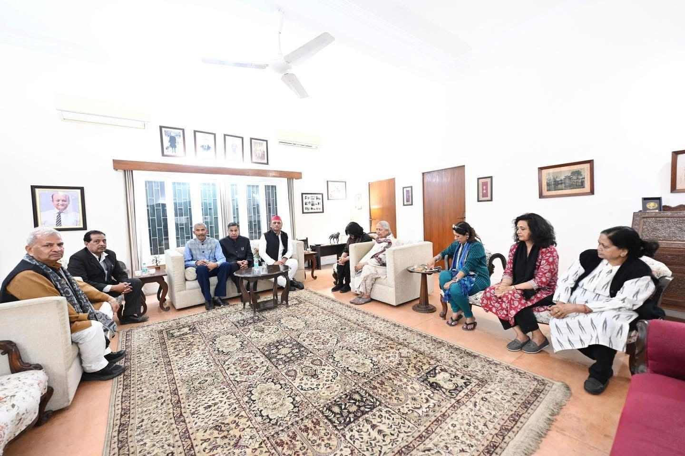
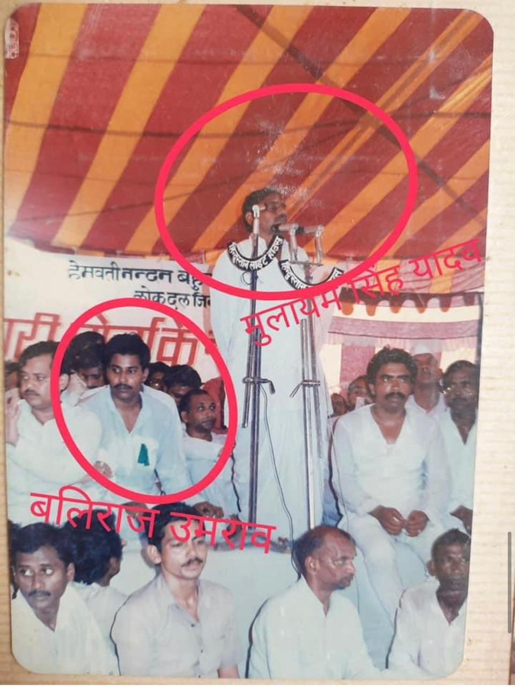
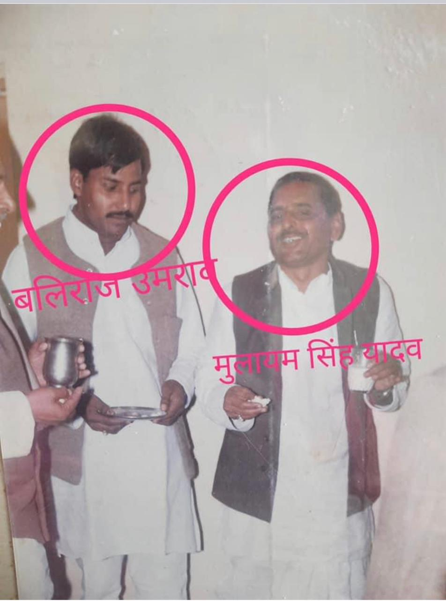

Official Website
Baliraj Umrao (Senior Advocate)
Former President, Bar Association, Fatehpur (Uttar Pradesh)
This website provides information about Shri Baliraj Umrao's life, work as an advocate, political and public journey, and organizational activities.
Biography
Education
Shri Baliraj Umrao completed his legal education in Jhansi, Bundelkhand, and obtained his LL.B. degree in 1977.
Work as an Advocate
From the early stage of his legal career, he developed strong experience in criminal matters, effective argumentation and a dedicated approach towards justice.
Through years of hard work, honesty and struggle, he became recognized among the senior advocates of the district.
Position and Tenure as President
In 2000, through the organization, he contested the election for the post of District President of the District Bar Advocates Association and won with a significant majority.
Shri Baliraj Umrao subsequently took responsibility as President of the Bar Association, Fatehpur.
Political and Public Life
In 1978, Shri Baliraj Umrao became deeply influenced by the personality and struggle-oriented ideas of respected former Chief Minister and prominent socialist leader Mulayam Singh Yadav.
During this period, he came into contact with him and became actively involved as a dedicated worker in the socialist movement and party.
He worked to take the ideology of the leader to the people and remained associated with the organization with dedication and honesty.
From time to time, he continued to have courtesy meetings with the leader and followed his guidance and directions with commitment.
Major Responsibilities and Work
Shri Baliraj Umrao carried out important responsibilities as a dedicated worker for the organization and party across various Assembly constituencies of Fatehpur district.
Wherever he was assigned responsibilities by Mulayam Singh Yadav, he worked with dedication, hard work and organizational ability.
He actively participated in several elections and contributed to the election efforts of leaders he supported.
Role in Assembly Elections
The leaders whose elections he supported or in which he played a role include Achal Singh, Naresh Uttam Patel, Madan Gopal Verma, K. K. Singh, Om Prakash Verma, Kshetrapal Verma and Liaqat Hussain.
According to the provided information, he also worked in connection with Sadar MLA Shri Chandra Prakash Lodhi and Nagar Palika President Smt. Najakat Khatoon, mother of Mohammad Haji Raza, and Shri Rajkumar Maurya.
Role in Lok Sabha Elections
He also played a role in Lok Sabha elections. He first served as an election agent for Shri K. K. Singh and later for Shri Rakesh Sachan, taking important responsibilities during their election campaigns.
According to the provided information, during Shri Naresh Uttam Patel's election he was active as an election agent and election in-charge, helping organize supporters and contributing to the election effort.
My Journey
Legal and Political/Public Journey
Legal Journey
Umrao Sahab's name has been known for a long time among experienced advocates dealing with criminal matters in Fatehpur. His long legal career has been marked by legal experience, argumentation, serious study and dedication to justice.
Throughout his legal career, he has continuously worked to help poor, vulnerable and needy people seek justice.
Legal Education
Shri Baliraj Umrao completed his legal education in Jhansi, Bundelkhand, and obtained his LL.B. degree.
District & Sessions Court, Fatehpur
After completing his LL.B., he began his legal career as an advocate at the District & Sessions Court, Fatehpur.
Recognition in Criminal Matters
From the early stage of his career, he developed strong experience in criminal matters, effective argumentation and dedication to justice.
After years of hard work, honesty and struggle, he became recognized among the senior advocates of the district.
Formation of Advocates' Organization
In 2000, he brought together advocates from OBC, SC, Muslim minority communities and other sections, organized PDA advocates, and formed a Sarv Samaj Advocates' Organization.
President of Bar Association, Fatehpur
Through this organization, he contested the election for District President of the District Bar Advocates Association, won with a significant majority, and took responsibility as President of the Bar Association, Fatehpur.
Work for the Interests of Advocates
During his leadership, the Bar Association saw organizational strengthening, mutual coordination and efforts towards the dignity of advocates.
According to the provided information, many advocates were subsequently elected to positions such as President, Secretary and other important organizational roles.
Political and Public Journey
Association with Socialist Ideology
In 1978, Shri Baliraj Umrao became influenced by socialist ideology and the personality and struggle-oriented ideas of Mulayam Singh Yadav. During this period, he came into contact with him and became associated with the socialist movement and party.
Role in Achal Singh's Assembly Election
In 1980, he played an active role in the Assembly election of senior leader Shri Achal Singh. During the election, he worked in connection with the organization and candidate.
Continued Role in Assembly Elections
In 1985 and 1989, he also played organizational and public-contact roles during Shri Achal Singh's Assembly elections.
Responsibilities in Various Assembly Constituencies of Fatehpur
After this, he carried out various responsibilities for the organization and party across different Assembly constituencies of Fatehpur district. Wherever he was assigned responsibility, he participated in organizational activities.
Role in Various Leaders' Elections
According to the provided biography, he played roles in the Assembly elections of Achal Singh, Naresh Uttam Patel, Madan Gopal Verma, K. K. Singh, Om Prakash Verma, Kshetrapal Verma and Liaqat Hussain.
Responsibilities in Lok Sabha Elections
He served as an election agent during the Lok Sabha elections of Shri K. K. Singh and later Shri Rakesh Sachan.
Role in Naresh Uttam Patel's Election
According to the provided biography, he served as an election agent and election in-charge during Shri Naresh Uttam Patel's Lok Sabha election.
Continued Association with the Organization
According to the provided biography, Shri Baliraj Umrao has remained associated with his ideology, organization and principles from 1978 to the present.
Photo Gallery










Family Introduction
Shri Baliraj Umrao's family life has been associated with simplicity, values and social principles.
Detailed information about the family will be made available on this website in the future.
Contact
📞 Mobile: 9415032572
📍 Current Address / Office:
481, MIG, Awas Vikas Colony,
Fatehpur, Uttar Pradesh
🏠 Native Place:
Village Khanpur, Post Digharuwa,
Block – Amauli, Assembly – Jahanabad,
District – Fatehpur, Uttar Pradesh